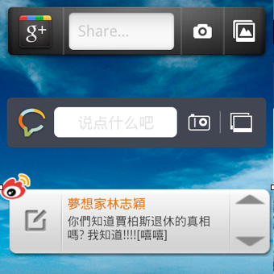
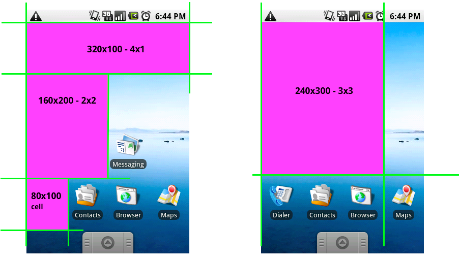
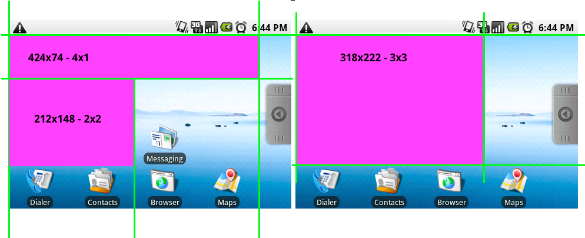
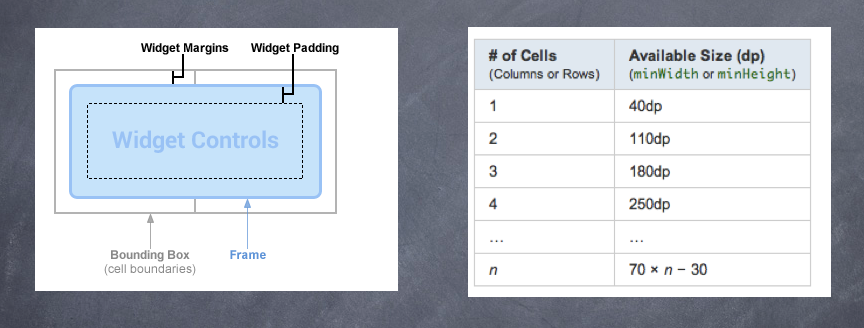

Rock with Android
Widget
安卓的Widget是一个满好玩儿的特性，但是Widget本身的功能一直都比较弱，在安卓3.x做了些增强，4.x又引入了锁屏Widget等新的功能。典型的Widget有入口型，展示型，独立型这几种。
上面的Google+和豆瓣说就是入口型的，微薄应该是展示型的，而下图的豆瓣电台的可以算是独立型的Widget。

格子尺寸
Widget所占的空间是以格子数来计算的，从1x1到4x4格的空间不等。一个格子的大小是：竖屏80x100，横屏106x74。
  上图左边解释了Widget的Box结构。右边是格子和最小高宽的对应关系。另外在平板下最大可以是8X7格子；而3.1开始会自动缩放，最小高宽就是默认高宽；4.0开始布局时会满足最小高宽下的最少格
Widget定义
//在res/xml/widget_larget.xml里声明provider
<appwidget-provider xmlns:android="http://schemas.android.com/apk/res/android"
android:updatePeriodMillis="0" //widget的更新间隔，0是不定时更新，而是等待广播更新
android:initialLayout="@layout/widget_large" //对应的布局
android:previewImage="@drawable/widget_large_preview" //在Widget列表的预览图
android:minWidth="290dp"
android:minHeight="290dp"
>
</appwidget-provider>
//在manifest里面声明对应的receiver
<receiver android:name="WidgetLarge" android:label="@string/widget_large">
<intent-filter>
<action android:name="android.appwidget.action.APPWIDGET_UPDATE"/>
</intent-filter>
<intent-filter>
<action android:name="com.rock.android.intent.WIDGET"/>
</intent-filter>
<meta-data android:name="android.appwidget.provider"
android:resource="@xml/widget_large"/>
</receiver>
其他的部分，就只是在receiver里面处理Widget的更新，设置对应的控件而已了。